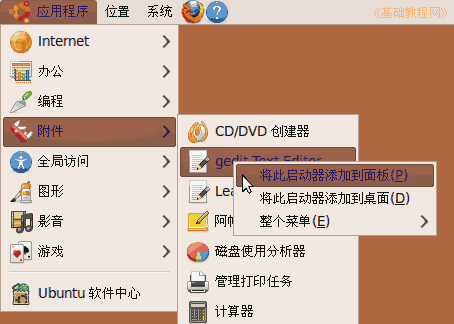
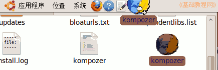

Ubuntu/GNOME 桌面程序指南
作者：TeliuTe 来源：基础教程网
二、添加面板程序图标 返回目录 下一课使用面板图标可以快速启动程序，可以把常用的程序放到面板上；
1、应用程序菜单
1）点左上角“应用程序”菜单，选择“附件”，出来下一级菜单，在“gedit 文本编辑器”上点右键，选择“将此启动器添加到面板”；

2）选中在菜单点左键后，就添加好了，上面板中会多出一个文本编辑的图标，点击可以打开它，其他程序操作方法类似；
2、拖放操作
1）找到文件夹里的应用程序，直接拖到面板上也可以；

2）拖到面板位置后，会看到多出一个加号，这时候就可以松开鼠标按钮，面板上也多出一个程序图标；
本节学习了的向面板添加程序图标的基础知识，如果你成功地完成了练习，请继续学习下一课内容；
本教程由86团学校TeliuTe制作|著作权所有
基础教程网：http://teliute.org/
美丽的校园……
转载和引用本站内容，请保留版权信息和本站链接。